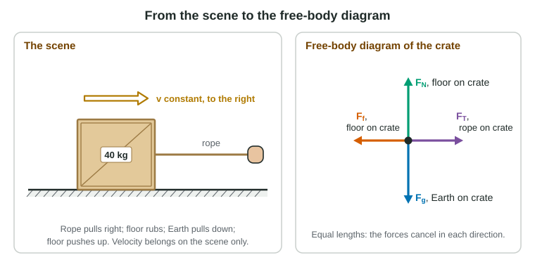
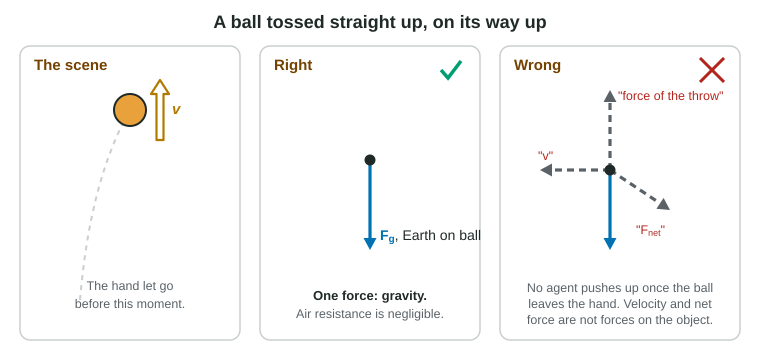

Push a shopping cart and it rolls. Let go of a pen and it falls. Stand on a floor and it holds you up. Each of these is an interaction: two objects acting on each other. This page teaches you to find every interaction that acts on one object and to draw them in a free-body diagram. Free-body diagrams appear on the free response nearly every year, and the readers' reports name them as the place where students lose the most points. Learn the rules here once, and follow them every time.
What a force is
A force is a push or a pull that one object exerts on another. It always comes from an interaction between two objects, so every force has an agent, the object that exerts it. If you cannot name the agent, it is not a force.
A force has a size and a direction, so it is a vector. Its unit is the newton (N). One newton is about the weight of a small apple. In base units, 1 N = 1 kg·m/s².
An object cannot push itself along. A driver who shoves the dashboard of a stalled car pushes one part of the car-and-driver against another part, and the seat pushes back on the driver. To move the car, something outside it must push: the road, or a friend.
Contact forces and gravity
Most forces need contact. When two surfaces touch, the atoms at the surfaces push and pull on each other electrically. We do not track the atoms; we name the result:
| Force | Symbol and label | Agent | Direction |
|---|---|---|---|
| Normal force | FN, floor on box | a surface the object touches | perpendicular to the surface, away from it |
| Tension | FT, rope on box | a rope, string or cable attached to it | along the rope, away from the object (ropes pull, never push) |
| Friction | Ff, floor on box | a surface the object touches | along the surface (details in 2.7) |
| Weight | Fg, Earth on box | Earth | straight down, toward Earth's center |
Weight is the one force at a distance in this course: Earth pulls a falling apple even though nothing touches it. Near Earth's surface its size is
Fg = mg, with g = 9.8 m/s² (the equations sheet value; 10 m/s² is also accepted on the exam)
Mass and weight are different things. Mass, in kg, is how much matter there is, and it is the same on the Moon. Weight, in N, is how hard a planet pulls on that mass, and it is smaller on the Moon. A 60 kg astronaut weighs 60 kg × 9.8 m/s² = 590 N on Earth but only about 96 N on the Moon, where g is 1.6 m/s². Section 2.6 says more about this pull and where g comes from.
The normal force is not automatically equal to mg. It is whatever push the surface must give. Press down on a box resting on the floor and the floor pushes up harder; lift up on the box and the floor pushes up less.
How to draw a free-body diagram

Follow the same five steps every time:
- Choose one object. A free-body diagram shows the forces on that object only.
- Draw it as a dot. The dot stands for the object at its center of mass.
- List the agents. Go around the object: every surface, rope or hand that touches it, then Earth. Each one gives you a force (a surface can give two: a normal force and friction).
- Draw each force as one arrow starting on the dot, pointing the way that force acts. Make the lengths match the situation: forces that cancel get equal arrows, a bigger force gets a longer arrow.
- Label each arrow with its type and agent: "FN, floor on crate".
Then check what is not allowed. The readers penalize each of these:
- No velocity arrow. Velocity describes motion; no object exerts it.
- No "force of motion" or "force of the throw". Once a ball leaves your hand, your hand exerts nothing on it.
- No net force arrow. The net force is the sum of the arrows, not another arrow.
- No components. Draw each force once, as a whole arrow. Break forces into parts in your equations, beside the diagram, never on it.
- No forces the object exerts on other things. The crate pushes on the floor, but that force belongs on the floor's diagram.

The net force
The net force, ΣF (read "sum of F"), is the vector sum of all the forces on the object. On a line, choose a positive direction and give each force a sign, then add.
Worked example 1. Two students push a cart. One pushes 45 N to the right; the other pushes 70 N to the left. Find the net horizontal force.
Principle: the net force is the vector sum. Take right as positive.
ΣFx = +45 N + (−70 N) = −25 N
The net force is 25 N to the left. Adding the sizes (115 N) would ignore the directions.
Handle the vertical and horizontal directions separately. A crate can have its vertical forces cancel while its horizontal forces do not.
Worked example 2. An 8.0 kg box sits at rest on the floor while a student presses down on it with 15 N. The up and down forces are equal in size. Find the normal force.
Forces down: the weight, Fg = mg = 8.0 kg × 9.8 m/s² = 78 N, and the hand, 15 N. Force up: the floor, FN.
Up equals down: FN = 78 N + 15 N = 93 N. The floor pushes up harder than the weight because the hand pushes down too.
Common slips
Missing the normal force is the most common: a surface that an object rests on always pushes on it. Next come extra arrows with no agent (velocity, motion, the throw, the net force). Then mass and weight mixed up: a mass in kg is not a force; multiply by g. Finally, labels: an arrow without its type and agent can cost the point even when it is right.